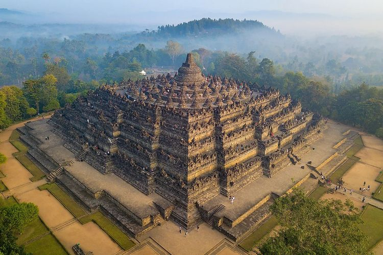
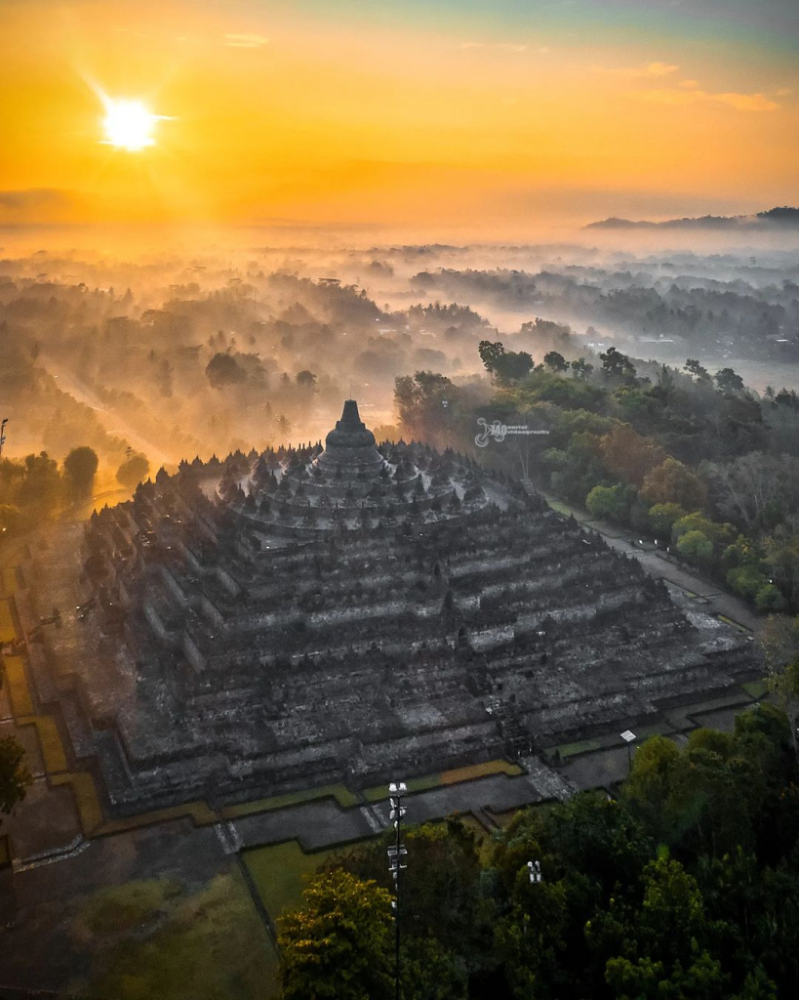
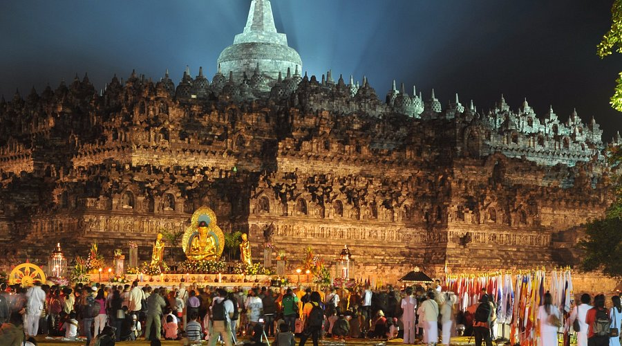
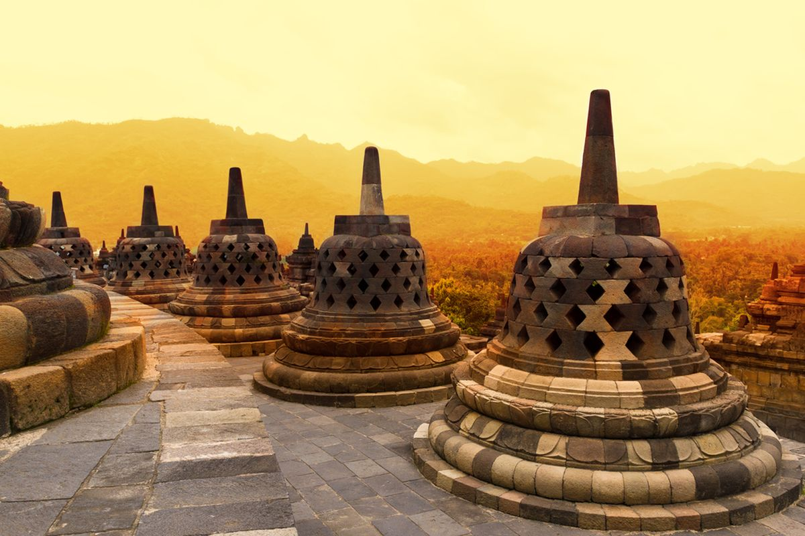
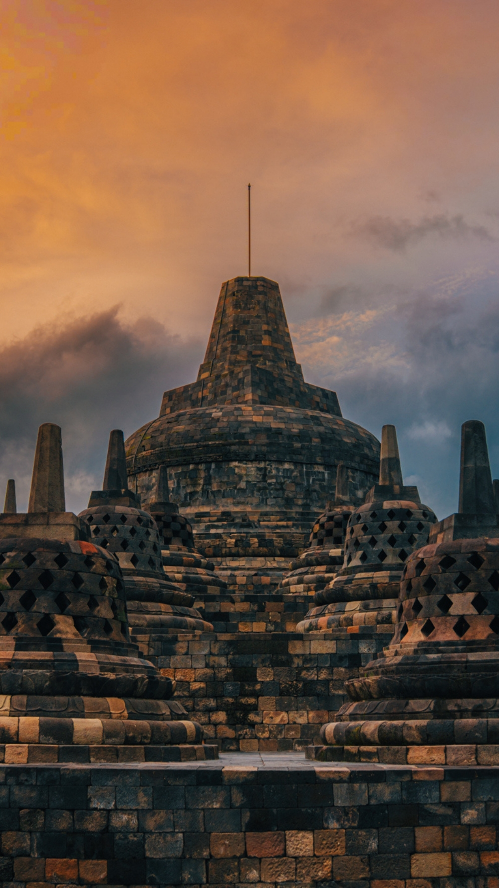
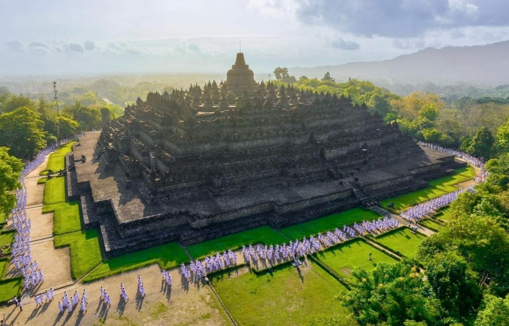
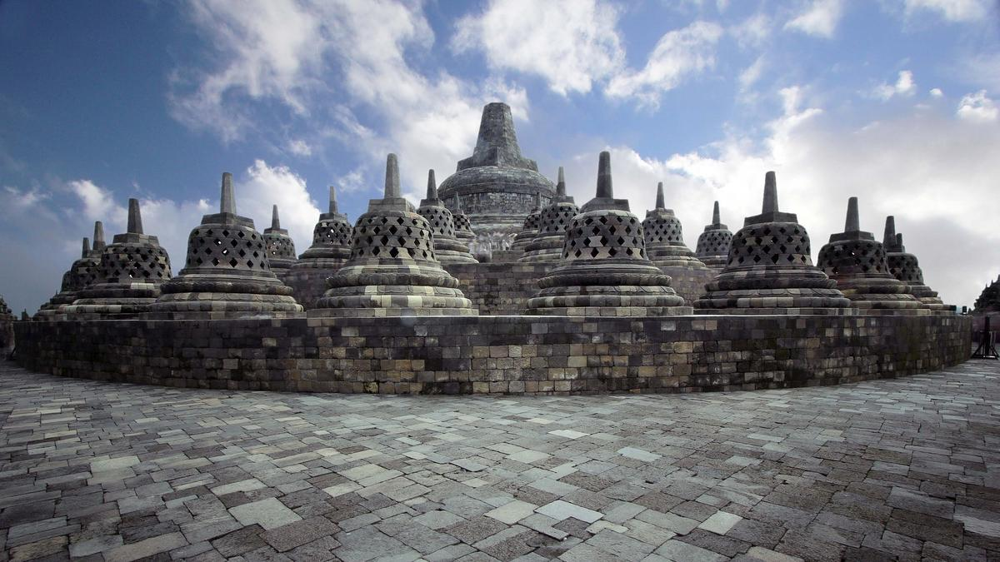

Sejarah Candi Borobudur

Candi Borobudur mulai dibangun sekitar abad ke-8 hingga ke-9 Masehi (antara tahun 750 hingga 850 Masehi) pada masa kejayaan Kerajaan Mataram Kuno di Jawa Tengah.
Latar Belakang dan Pembangunan
- Prakarsa Dinasti Syailendra: Pembuatan candi ini diprakarsai oleh raja-raja dari Dinasti Syailendra yang menganut agama Buddha Mahayana, salah satunya diperkirakan dimulakan pada masa Raja Samaratungga.
- Monumen Mahakarya Buddha: Borobudur dibangun sebagai monumen suci untuk memuliakan Buddha sekaligus tempat ziarah spiritual untuk menuntun umat manusia menuju pencerahan.
- Proses Pembangunan: Pembuatannya memakan waktu puluhan hingga ratusan tahun. Bangunan ini dirancang oleh seorang arsitek legendaris bernama Gunadharma dan dibangun dengan menyusun jutaan blok batu andesit tanpa menggunakan semen, melainkan menggunakan sistem kuncian antar-batu (interlocking).
Filosofi Rancang Bangun
Struktur Candi Borobudur dirancang membentuk tingkatan alam semesta (kosmologi) dalam ajaran Buddha:
- Kamadhatu (Tingkat Dasar): Melambangkan dunia bawah atau ranah manusia yang masih terikat oleh hawa nafsu dan keinginan duniawi.
- Rupadhatu (Tingkat Tengah): Melambangkan dunia antara, tempat manusia mulai bisa melepaskan diri dari hawa nafsu namun masih terikat oleh rupa dan bentuk.
- Arupadhatu (Tingkat Atas): Melambangkan dunia tertinggi yang tanpa rupa dan bentuk, ditandai dengan stupa-stupa berlubang dan stupa induk terbesar di puncak yang melambangkan pencapean Nirwana (pencerahan sempurna).
Kompleks candi ini sempat terlupakan dan tertimbun abu vulkanik Gunung Merapi serta semak belukar selama berabad-abad setelah pusat kerajaan pindah ke Jawa Timur, sebelum akhirnya ditemukan kembali pada tahun 1814 oleh Sir Thomas Stamford Raffles.
Tingkatan Kosmologi Candi
| Tingkatan | Nama Bagian | Makna Filosofis |
|---|---|---|
| Dasar | Kamadhatu | Dunia manusia yang masih terikat hawa nafsu |
| Tengah | Rupadhatu | Dunia transisi (melepas nafsu, masih terikat wujud) |
| Atas / Puncak | Arupadhatu | Dunia tertinggi / Nirwana (tanpa wujud dan rupa) |
Lokasi Candi Borobudur
Candi Borobudur terletak di Jl. Badrawati, Kw. Candi Borobudur, Borobudur, Kecamatan Borobudur, Kabupaten Magelang, Jawa Tengah.
Pemesanan Tiket Official
Tertarik untuk berkunjung langsung? Kamu bisa memesan tiket resmi melalui link di bawah ini:
Informasi Kunjungan
| Kategori | Keterangan |
|---|---|
| Jam Buka Pelataran | 06.30 – 17.00 WIB |
| Hari Operasional | Selasa - Minggu (Senin Tutup/Pemeliharaan) |
| Fasilitas Tersedia | Area Parkir, Pemandu Wisata, Toilet, Mushola, Toko Souvenir |
Galeri Foto





